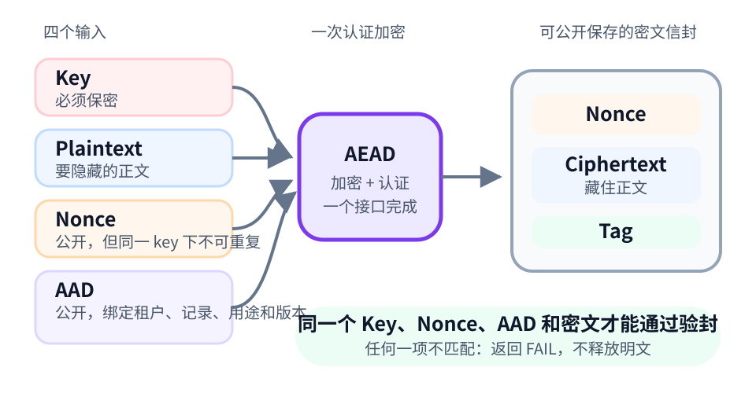
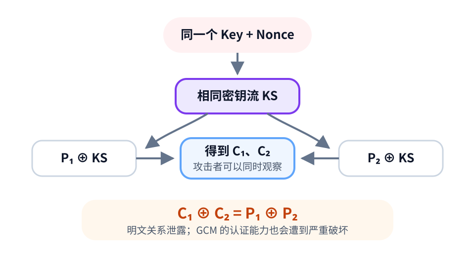
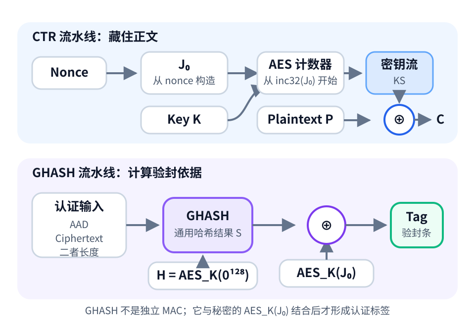

详解 AEAD 与 AES-GCM：不只加密，还要防篡改
Posted on 一 13 7月 2026 in Tech
| Abstract | 详解 AEAD 与 AES-GCM：不只加密，还要防篡改 |
|---|---|
| Authors | Walter Fan |
| Category | Tech |
| Status | v1.0 |
| Updated | 2026-07-15 |
| License | CC-BY-NC-ND 4.0 |
锁没被撬，快递标签却被换了
假设数据库里有两条加密记录，一条属于租户 A，一条属于租户 B。它们由同一个服务、同一套密钥体系管理。攻击者虽然看不懂密文，却把两条记录的位置调换了。如果系统只做“能解密就算成功”，又没有把租户和记录上下文绑定进去，租户 A 就可能读到本不属于它的数据。
锁没有被撬，快递标签却被换了。
这正是“只加密”容易漏掉的问题：机密性只能让别人看不懂，不能保证数据没被篡改，更不能保证这份密文仍待在正确的业务位置。 AEAD（Authenticated Encryption with Associated Data，带关联数据的认证加密）解决的，就是“既要藏住正文，又要给整个包裹贴上防拆封条”。AES-GCM 则是最常见的 AEAD 方案之一。
读完本文，你应该能看懂 AEAD API 里的 key、nonce、plaintext 和 AAD，知道 AES-GCM 的 CTR 与 GHASH 各干什么，也能审查代码里最容易出事的三个地方：
nonce 不重复，AAD 不含糊，认证失败不放行。
这篇文章怎么读
| 你想带走什么 | 建议路线 | 可以跳过 |
|---|---|---|
| 只想安全地调用 AES-GCM | 第 1、2、3、6、7、9 节 | 第 5 节原理加餐 |
| 想理解 nonce 为什么危险 | 第 2、4、5 节 | Python 示例 |
| 想做工程评审 | 从头阅读，重点看第 7、8、9 节 | 无 |
1. 只加密，为什么还不够
保护一份数据，至少要回答三个问题， 也就是著名的 CIA 问题：
| 问题 | 安全属性 | 大白话 |
|---|---|---|
| 别人能不能看懂？ | 机密性（confidentiality） | 正文有没有藏起来 |
| 数据有没有被改过？ | 完整性（integrity） | 封条有没有破 |
| 数据是否由持有正确密钥的一方生成？ | 消息认证（authentication） | 封条是不是用正确印章盖的 |
传统加密主要回答第一个问题。某些加密方式具有“可塑性”：攻击者不知道原文，也可能通过修改密文，让解密结果发生可预测的变化。
当然，可以自己组合加密与 MAC。例如正确实现的 Encrypt-then-MAC 也能很安全。麻烦在于，工程师要亲自处理密钥分离、操作顺序、认证范围和错误返回。密码学给了足够多的自由以后，程序员往往会回赠一个意想不到的事故。
AEAD 把机密性、完整性和消息认证收进一个经过分析的接口，减少自由发挥的空间。
这里的“认证”不是用户登录，也不是数字签名。它只能说明消息由某个持有共享密钥的参与方生成，不能区分共享同一把 key 的几个人，更不提供不可否认性。
2. AEAD：带防拆封条的加密信封
先别急着背缩写。把 AEAD 想成一个加密信封：
Plaintext是要藏起来的正文；AAD是信封外面的收件人、订单号和用途，不保密，但不能被改；Nonce是本次封装使用的唯一编号；Tag是防拆封条，负责把编号、上下文和密文绑在一起。

按照 RFC 5116 的抽象，加密和解密可以写成：
| 符号 | 含义 | 是否保密 | 关键要求 |
|---|---|---|---|
| \(K\) | Key，密钥 | 是 | 由安全随机源生成，交给 KMS/HSM/Vault 管理 |
| \(N\) | Nonce，一次性编号 | 否 | 同一把 key 下不得重复用于加密 |
| \(P\) | Plaintext，明文 | 是 | 要加密并认证的正文 |
| \(A\) | AAD，关联数据 | 否 | 不加密，但必须以完全相同的字节参与解密 |
| \(C\) | Ciphertext，密文 | 否 | 由明文加密得到 |
| \(T\) | Tag，认证标签 | 否 | 验证 key、nonce、AAD 和密文是否匹配 |
最反直觉的地方是：nonce、AAD、ciphertext 和 tag 都可以公开保存。公开不等于可以随便改。 攻击者可以看到快递单，却不能换掉门牌号后还伪造出有效封条。
很多高层库直接返回 ciphertext || tag，也有协议把二者分开保存。接口长相不同，安全语义相同：解密只应返回完整明文或 FAIL，不能把“解到一半的内容”先交给业务试吃。
3. AAD：把密文钉在正确的位置
回到开头的跨租户调包问题。假设明文是一条 API Token：
| 项目 | 内容 |
|---|---|
| Plaintext | sk_live_xxx |
| AAD | tenant=acme, record=42, purpose=api-token, schema=v1 |
当密文被复制到 record=99 时，解密端应从当前可信的租户和记录上下文重新构造 AAD。它与加密时不同，认证自然失败。攻击者看得见 record=42，但没有 key，做不出与新位置匹配的 tag。
适合放进 AAD 的通常是：
- 租户、记录或资源 ID；
- 数据用途，例如 API Token、会话票据或私钥；
- schema、协议或算法版本；
- 序列号、消息类型等必须明文传输的头部。
AAD 不是秘密口袋
不要把密码、Token、身份证号放进 AAD，然后期待算法替你保密。AAD 是明文，只提供完整性和消息认证。它还可能泄露“谁在什么时间处理了哪类业务”等元数据。
AAD 必须稳定且无歧义
直接拼接 tenant_id + record_id 很危险：("ab", "c") 和 ("a", "bc") 都可能变成 "abc"。使用固定宽度、长度前缀，或者一份明确、稳定、跨语言一致的结构化编码规范。
若用 JSON，就必须规定 UTF-8、字段集合、数字格式、字段顺序和 Unicode 处理。人眼觉得下面两段 JSON “意思一样”，AEAD 看到的却是两串不同字节。密码学不负责体谅格式化工具的心情。
AAD 不是授权，也不自动防重放
把 tenant_id 放进 AAD，可以发现密文被搬到另一个租户；系统仍要先检查调用方是否有权访问这个租户。
把序列号放进 AAD，可以防止序列号被修改；攻击者仍可能把整份合法消息原样重发。防重放还需要接收方维护窗口、计数器或已处理状态。
AAD 能证明“上下文没被改”，不能替业务决定“这个上下文是否允许”。
4. Nonce：最不能重复的 12 字节
Nonce 可以理解为“只使用一次的编号”。它不需要保密；对 AES-GCM 来说，核心要求只有一句：
同一把 key 与 nonce 的组合，只能用于一次加密。
解密、重试读取当然可以再次使用原 nonce，这里的“一次”说的是加密调用。
NIST 推荐 GCM 使用 96-bit，也就是 12-byte nonce。这个长度可以直接构造内部初始块，互操作和性能也最好。其他长度并非一概不安全，但没有协议要求时，别主动给未来的自己增加考题。
为什么重用会出大事
CTR 模式会根据 key 和 nonce 产生密钥流 \(KS\)。相同的 key 与 nonce 会产生相同的 \(KS\)：
两份密文一异或，密钥流被消掉：

攻击者还没直接拿到两份明文，却已经得到它们的关系。若其中一份内容已知或格式可猜，另一份就可能被逐步推出。更糟的是，GCM 的认证关系也会受损，RFC 5116 直接警告：nonce 重用会破坏这把 key 提供的机密性、完整性和真实性保护。
一旦确认发生 nonce 重用，不要只删掉两条坏记录。应停止继续使用该 key，轮换密钥，评估受影响数据，并排查多节点分配、持久化、崩溃恢复和虚拟机快照回滚。
随机数还是计数器
| 方案 | 优点 | 必须承担的责任 |
|---|---|---|
| 96-bit CSPRNG 随机 nonce | 无状态、实现简单 | 唯一性是概率保证；要限制单 key 使用量并按策略轮换 |
| 固定设备前缀 + 单调计数器 | 唯一性容易证明 | 多节点前缀不能冲突；计数器必须安全持久化并防回滚 |
| 直接截断业务 ID | 写起来很快 | 很难证明跨租户、环境和版本后仍唯一，不建议拍脑袋使用 |
os.urandom(12) 是常见的随机策略，但“随机”不等于数学上的“绝不重复”。抽取 \(q\) 个 96-bit 随机 nonce，碰撞概率近似为：
普通业务在合理的单 key 使用范围内可以把这个概率压得很低，但设计仍要有消息上限、监控和轮换，而不是让一把 key 从项目成立陪到公司上市。
5. 原理加餐：CTR 藏正文，GHASH 验封条
不想看内部机制，可以跳到“30 秒复盘”。安全调用 AES-GCM 不要求手写有限域乘法，正如开车不要求先造发动机。
AES 是分组密码：它使用 128、192 或 256-bit key，处理固定的 128-bit 数据块。GCM（Galois/Counter Mode）给 AES 接上两条流水线：
- CTR 负责加密，让别人看不懂正文；
- GHASH 参与认证，把 AAD、密文和长度纳入验封依据。

CTR：把 AES 变成密钥流
96-bit nonce 会直接构造：
这里容易混淆一个细节：AES_K(J0) 用于遮蔽认证结果；真正加密第一块明文的计数器从 \(\operatorname{inc32}(J_0)\) 开始。后续计数器不断递增，经过 AES 形成密钥流，再与明文异或得到密文。
CTR 不需要 padding，纯密文长度与明文相同，而且不同块可以并行处理。它快，也正因为如此，nonce 重用时会干脆利落地重放同一条密钥流。
GHASH：不是普通哈希，也不是独立 MAC
GCM 先计算哈希子密钥：
然后把 AAD、密文和二者的 bit 长度编码成 128-bit 数据块，在有限域 \(GF(2^{128})\) 上累积，得到 GHASH 结果 \(S\)。长度块负责固定 AAD 与密文的边界，避免补零带来歧义。
最后生成认证标签：
GHASH 是通用哈希，不应单独当作 MAC。它与秘密的 \(\operatorname{AES}_K(J_0)\) 结合，才形成 GCM 的认证标签。常见高层 API 使用完整的 128-bit，也就是 16-byte tag；没有协议硬约束时，不要为了省几个字节自行截短。
Tag 依赖 key、nonce、AAD 和 ciphertext。攻击者在不知道 key 的情况下篡改其中任何一项，验证应以极高概率返回 FAIL，而不是数学上绝无可能被猜中。系统还应限制失败尝试，别给攻击者无限次碰运气。
30 秒复盘
| 角色 | 一句话 |
|---|---|
| CTR | 产生密钥流，把明文变成密文 |
| GHASH | 汇总 AAD、密文和长度，参与生成 tag |
| Nonce | 确保同一把 key 的每次加密走不同路径 |
| Tag | 验证整套输入是否匹配；失败就不放明文 |
CTR 藏正文，GHASH 验封条。两条流水线都依赖同一个前提：nonce 不能重用。
6. Python 最小示例：把上下文也绑进去
下面只展示高层 AESGCM API 的核心边界，不再把参数解析、文件权限和终端输入混进来。先安装：
python -m pip install cryptography
import json
import os
from cryptography.exceptions import InvalidTag
from cryptography.hazmat.primitives.ciphers.aead import AESGCM
NONCE_SIZE = 12
def encode_aad(tenant_id: str, record_id: int, purpose: str) -> bytes:
context = {
"purpose": purpose,
"record_id": record_id,
"schema": 1,
"tenant_id": tenant_id,
}
return json.dumps(
context,
sort_keys=True,
separators=(",", ":"),
ensure_ascii=False,
).encode("utf-8")
def encrypt(key: bytes, plaintext: bytes, aad: bytes) -> bytes:
nonce = os.urandom(NONCE_SIZE)
ciphertext_and_tag = AESGCM(key).encrypt(nonce, plaintext, aad)
return nonce + ciphertext_and_tag
def decrypt(key: bytes, payload: bytes, aad: bytes) -> bytes:
if len(payload) < NONCE_SIZE + 16:
raise ValueError("invalid encrypted payload")
nonce = payload[:NONCE_SIZE]
ciphertext_and_tag = payload[NONCE_SIZE:]
return AESGCM(key).decrypt(nonce, ciphertext_and_tag, aad)
key = AESGCM.generate_key(bit_length=256)
aad = encode_aad("acme", 42, "api-token")
payload = encrypt(key, b"sk_live_xxx", aad)
assert decrypt(key, payload, aad) == b"sk_live_xxx"
try:
wrong_aad = encode_aad("acme", 99, "api-token")
decrypt(key, payload, wrong_aad)
except InvalidTag:
print("record substitution rejected")
这段代码刻意做了四件事：
- 使用高层
AESGCM，不手写 CTR、GHASH 或 tag 比较； - 每次加密抽取新的 12-byte 随机 nonce；
- 把租户、记录、用途和 schema 编成稳定 AAD；
- 解密失败时不返回任何明文。
生产代码还要明确跨语言的 AAD 字节规范。上面的 JSON 只适合受控示例；一旦涉及浮点数、Unicode 归一化、可选字段或多语言实现，就应采用经过约定的 canonical encoding 或长度前缀格式，并用测试向量固定下来。
还要注意：绑定 record_id=42 可以阻止密文被搬到 99，却不能阻止攻击者把 42 的旧版本合法密文放回来。防回滚需要可信、经过认证，而且不能与密文一起回滚的版本状态，例如锚定在密文存储回滚域之外的单调计数或审计系统。若版本号和密文放在同一个可整体恢复的数据库里，它们只会一起回到过去，AEAD 不会凭空记住历史。
用户登录密码也不该用 AES-GCM 保存。密码校验需要 Argon2、scrypt 或 bcrypt 这类专门的密码哈希；可逆加密解决的是另一类问题。
7. 生产系统怎样收口
数据库里只放一个名叫 encrypted_value 的 Base64 字符串，短期很清爽，半年后通常会变成考古现场：它用什么算法？哪版 key？nonce 在哪里？tag 是前置还是后置？AAD 又怎样重建？
一个可演进的密文信封至少要说明：
{
"version": 1,
"algorithm": "AES-256-GCM",
"key_id": "customer-secret-key",
"key_version": "v3",
"nonce_b64": "...",
"ciphertext_and_tag_b64": "...",
"aad_schema": "tenant-record-purpose-v1"
}
Base64 只是把二进制编码成文本，不是加密，也不会增加安全性。
密文信封本身也是不可信输入
在 tag 验证前，algorithm、key_id、长度和版本都可能被攻击者修改。解密端要先做边界检查和 allowlist 限制，再按受约束的 key version 取密钥。不要让一条畸形记录指挥系统加载任意算法或任意 key。
AAD 最好从当前可信的租户、记录和用途上下文重建。仅仅把 AAD 与密文放在一起还不够：攻击者若把整套信封搬走，内部认证仍可能通过，业务仍要核对信封属于当前请求。
认证失败只做一件事：失败
InvalidTag 可能意味着 key、nonce、AAD、ciphertext 或 tag 中任一项不匹配。工程上应统一处理：
- 不返回未经认证的明文；
- 不回退到明文、固定 key、旧算法或“忽略 tag 再试一次”；
- 对外返回统一错误，避免提供探测信息；
- 日志只记录脱敏的 record id、key version、算法和错误类型；
- 监控失败率，持续上升可能意味着配置错误、数据损坏或攻击探测。
大文件要防的不只是调包
大文件通常需要分块 AEAD。每块要使用唯一 nonce，并在 AAD 中绑定 file id、chunk index、总块数和版本。但这些字段只保证“收到的块没有被改”：如果攻击者直接删掉最后一块，系统还要检查索引是否完整，并验证一份经过认证、且锚定在同一回滚域之外的可信 manifest 或完成状态。验证完成之前，不能把不完整文件交给业务。AEAD 不会替接收方发现一个从未送到的包裹。
8. AES-GCM 解决不了什么，什么时候选别的
AES-GCM 很能干，但不是安全瑞士军刀。它不负责：
- 密钥管理：生成、授权、轮换、备份和销毁仍要靠 KMS/HSM/Vault；
- 访问控制：能解密不代表应该解密；
- 防重放和防回滚：合法密文可以原样重发或恢复旧版本；
- 流量分析：长度、时间、频率和公开 AAD 仍可能泄露信息；
- 终端安全：攻击者若控制了解密进程或拿到 key，算法无能为力；
- 数字签名：共享 key 的参与方都能生成 tag，无法证明具体是谁创建消息。
AEAD 也不只有 AES-GCM：
| 算法 | 适合场景 | 主要边界 |
|---|---|---|
| AES-GCM | 有成熟库和 AES 硬件加速的通用场景 | 同一 key 下 nonce 必须唯一 |
| ChaCha20-Poly1305 | 缺少 AES 加速、移动端或跨平台性能敏感场景 | 同样不能重用 key/nonce |
| AES-GCM-SIV | 很难可靠协调 nonce，希望降低误用损失 | 重复仍会泄露消息是否相同；加密需要两遍处理，不能像 GCM 那样边算边输出 |
AES-GCM-SIV 的“misuse-resistant”不是“欢迎重用 nonce”。它只是把灾难从“机密性和完整性一起塌”降到较可控的泄露。实际选择仍应服从协议标准、平台能力、合规要求和成熟库支持。
9. 上线前八问
| 检查项 | 应该能给出的答案 |
|---|---|
| 是否使用高层 AEAD API | 使用成熟库，不手写 GCM |
| key 从哪里来 | CSPRNG 生成，由 KMS/HSM/Vault 管理，不硬编码、不进日志 |
| nonce 如何保证不重复 | 明确随机或计数器策略、单 key 上限、多节点和崩溃恢复 |
| AAD 绑定什么 | 租户、记录、用途、schema 等可信上下文 |
| AAD 字节怎样确定 | 编码、顺序、版本和跨语言测试向量都有规范 |
| 密文怎样演进 | 保存受约束的算法、key version、nonce、ciphertext/tag 和 AAD schema |
| 认证失败怎么办 | 不释放明文，统一报错，脱敏记录并监控 |
| 是否测试过失败路径 | wrong key、nonce、AAD、篡改密文和截断 tag 全部失败 |
不要只测试“加密再解密等于原文”这一条快乐路径。拿现有调用分别改 nonce、AAD、ciphertext 和 tag，一个字节也行；四次都必须坚定地失败。安全代码的价值，很多时候不在正确输入能成功，而在错误输入不能蒙混过关。
最后一句
AEAD 的思路并不复杂：秘密正文放进密文，不能隐藏的上下文放进 AAD，再用 tag 把 nonce、上下文和密文绑成不可随意拆换的整体。
AES-GCM 真正难的地方也不在 AES，更不在 Galois Field 的公式，而在三个工程习惯：nonce 不重复，AAD 不含糊，认证失败不放行。
密码学算法通常比我们的业务代码严谨。最怕的不是公式太难，而是调用成功以后，我们顺手绕开了它辛苦守住的边界。
参考资料
- RFC 5116: An Interface and Algorithms for Authenticated Encryption
- NIST SP 800-38D: Galois/Counter Mode (GCM) and GMAC
- cryptography: Authenticated encryption
- RFC 8452: AES-GCM-SIV
本作品采用知识共享署名-非商业性使用-禁止演绎 4.0 国际许可协议进行许可。 欢迎在我的个人网站 https://www.fanyamin.com 访问原文并评论。